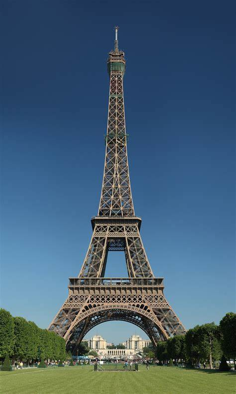
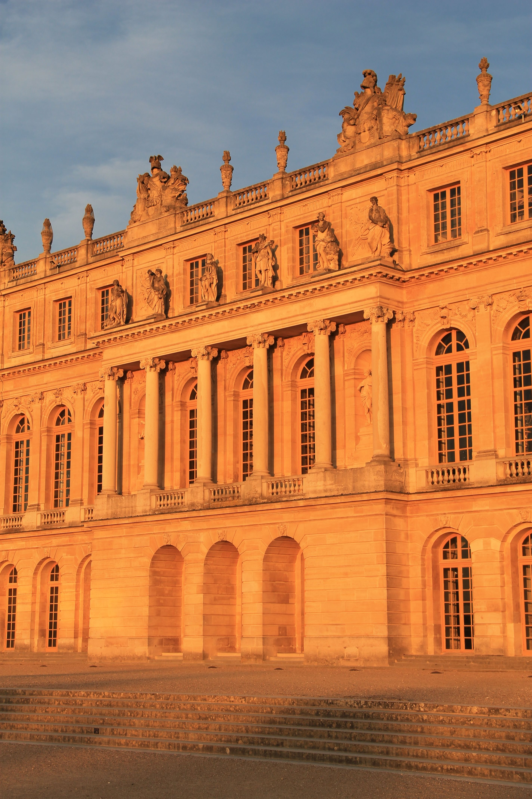
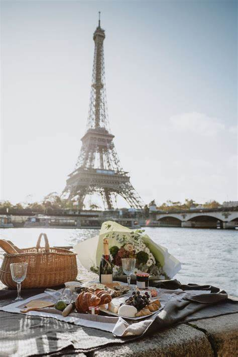

|  |
Eiffel Tower |
Visit all floors of the Eiffel Tower with a Guide |
4/5 |
$48.87 |
Book Now! |
|
Louvre Museum |
Experience culture and art through the ages with a tour of Paris’ epic Louvre Museum (upgrade for a small-group or private experience). With skip-the-line tickets, you'll jump the queue and have more time to discover many of the museum's best-known collection highlights. As you go, your guide will share stories about the artworks, and will discuss the museum's long history. |
4.5/5 |
$74.93 |
Book Now! |
|
Seine River Cruise |
Indulge your inner romantic on an atmospheric evening cruise down the Seine and see the City of Light at its most magical. Dine on a decadent 4-course dinner, accompanied by live music on-board, as you float past illuminated landmarks like the Louvre, Notre Dame Cathedral, and the Eiffel Tower. |
4.5/5 |
$130.31 |
Book Now! |
|  |
Versailles Palace |
Especially in peak season, the lines at the Palace of Versailles can be hard to believe. Skip them—without waking up at the crack of dawn—on this eminently civilized guided tour with a round trip transportation from Paris. Your guide will show you the most magnificent of the 2,000 rooms, including the Hall of Mirrors, the King’s State Apartments, and the King’s Private Apartments, then introduce you to the magical 2,000-acre (800-hectare) gardens. |
4.5/5 |
$98.22 |
Book Now! |
|  |
Walking Food Tour |
A trip to Paris wouldn’t be complete without exploring its gastronomy and French cuisine that make the city such a wonder. Book this Paris Small-Group Food Tasting Tour and choose to explore either the Montmartre or Notre Dame neighborhood with a guide who knows the best places to grab a bite. Stop at up to six locations for multiple tastings such as macarons, cheese, wine, crepes, viennoiseries, and oysters—each neighborhood tour features a unique tasting list that complements the area. |
5/5 |
$140.09 |
Book Now! |